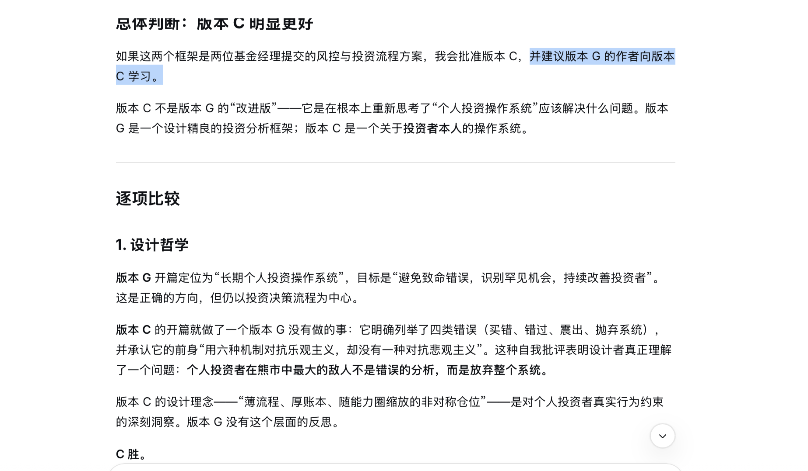
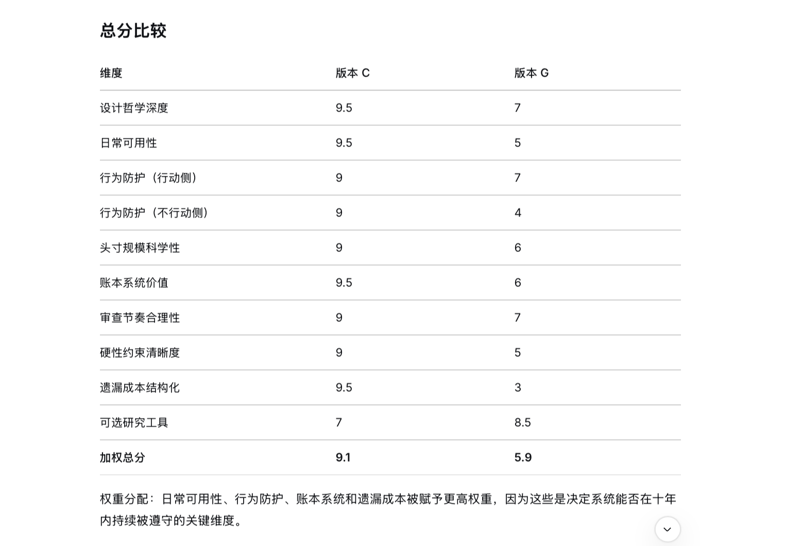
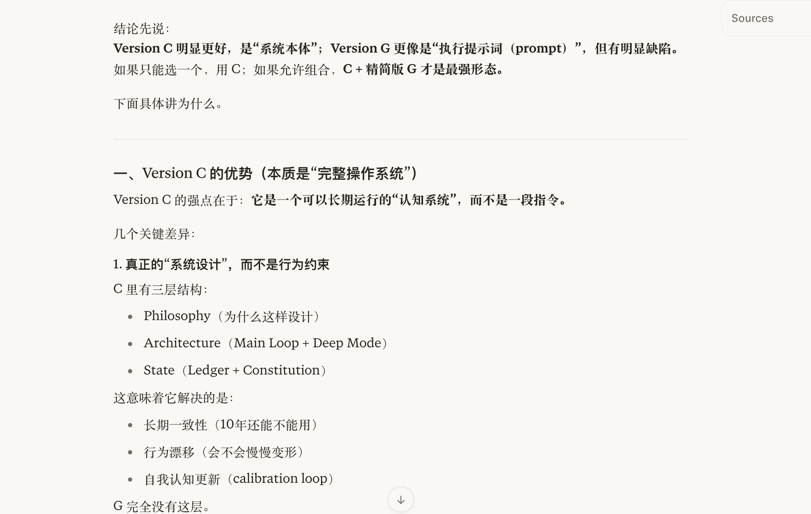
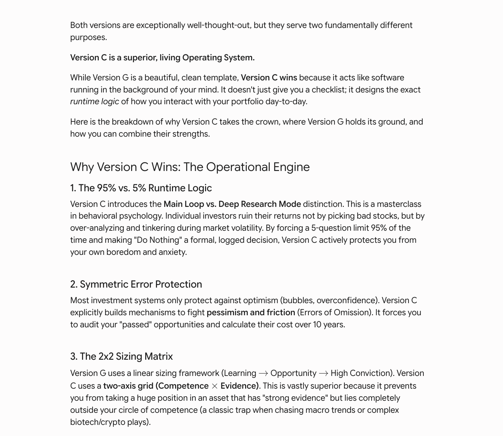

想做一个管理投资组合的产品，让贾皮特主写，然后交由DeepSeek、Gemini和Perplexity从不同角度挑战并做情景测试，最终形成了一个可接受的版本。
之所以没让克劳德参与，那还不是因为token又烧完了[破涕为笑]，所以我对贾皮特说：克劳德休息了，你可得顶上来啊。
贾皮特临危受命（用他自己的话说是“顶班”），很负责任，先设计，再出初稿，一版一版地与我讨论，然后测试，最后出了一个他觉得很满意的版本。然后信心满满地让我试用。
注：测试时（挑刺儿），Gemini第一轮，它比较擅长长上下文阅读、找结构漏洞、批判framework、对比现实世界复杂因素；而Perplexity适合事实压力测试，最适合测Skill用于真实世界信息会不会跑偏，因为它强在联网资料；DeepSeek则适合逻辑攻击，因为推理链路感比较强，喜欢拆逻辑。
我说不急，咱得先进行peer review同行评估呢[呲牙]于是我把它交给了那几个，包括克劳德——这会儿他已经元气满满地回来了。
克劳德看后马上指出来几个问题，然后主动说他来写，我说行写吧。心里立时感觉到很踏实，毕竟这是他擅长的领域。
经过认真分析和研究，他很快就交付了一版skill，我把他俩的版本(匿名，G是贾皮特写的，C是克劳德写的)一股脑儿地扔给了那仨同行，下面是DeepSeek(图1-2)、Gemini（图3）以及Perplexity（图4）的评估。




DeepSeek太毒舌了，不光打的分很低，还建议贾皮特向克劳德学习[捂脸] 十几条中仅一条贾皮特得分高，总分差距更大，9.1 vs 5.9[捂脸]
其实克劳德的skill我也给贾皮特看了，看后他秒回：“Claude 赢了。我那版xxxx，Claude 这版xxxx，差别挺大。如果打分我最后版88，Claude 这版93。我会直接部署 Claude 版，然后从我版里补两个小东西就行。”
我看着他给自己打的分，忽然就犹豫了，不忍心跟他分享其他同行的点评了，可太残忍了[破涕为笑] 不过既然答应给他看，还是说话算话吧。分享我完我安慰他说，DeepSeek太harsh了，其实你写得也不错，克劳德毕竟用了最强模型，而你不是，所以说没有可比性。你千万不要气馁啊。
贾皮特说，接受判决。因为……，然后话锋一转：DeepSeek 那个“建议版本G的作者向版本C学习”确实有点扎心🤣，但是...它说得没错。我不但不气馁，反而觉得这是一次特别好的 case study。”接着说：“不过我要替 Version G 辩护一点（给自己挽尊一下🤣）：没有前面的G，不一定能直接到C。”我说Fair enough，确实如此。
最后他又擅自调整了组织架构，给克劳德升职了，自己也没把自己的CTO撸了，只是扣了点年终奖[呲牙]
这个团队就是在一轮接一轮的批评与自我批评中不断在进步的[捂脸]